Tiara Azizah | Informatika 24
Laravel menyediakan fitur authentication scaffolding melalui package laravel/ui yang memudahkan pembuatan sistem login, register, dan reset password. Pada praktikum ini, diterapkan fitur authentication Laravel dengan tampilan menggunakan Bootstrap. Selain itu, dilakukan customisasi tabel users dengan menambahkan kolom username, level, dan status. Seluruh tampilan antarmuka (UI) diubah menggunakan template SB Admin 2 (berbasis Bootstrap) untuk memberikan tampilan dashboard yang lebih profesional. Terakhir, dibangun fitur Manajemen Users dengan operasi CRUD (Create, Read, Update, Delete) menggunakan Laravel Resource Controller dan Eloquent ORM.
Praktikum ini mencakup:
laravel/ui dan pembangkitan authentication (bootstrap).UserController untuk manajemen users (CRUD) lengkap dengan view menggunakan layout yang telah dibuat.users.Project Laravel dibuat dengan nama laravel-sisfo menggunakan Composer (Laravel versi 13). Perintah yang dijalankan:
composer create-project laravel/laravel laravel-sisfo --prefer-dist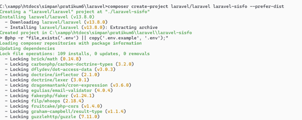
Gambar 1: Proses pembuatan project Laravel berhasil, terlihat versi Laravel v13.8.0.
Tampilan awal Laravel setelah server dijalankan (php artisan serve) dapat dilihat pada gambar berikut.
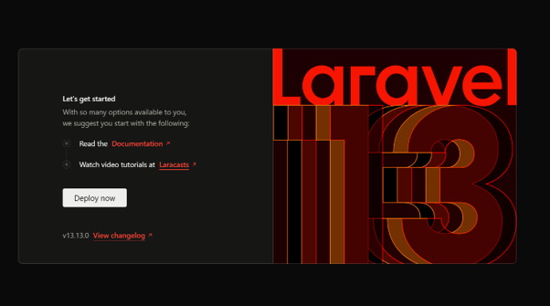
Gambar 2: Halaman welcome Laravel v13.13.0 (tampilan default).
File .env diisi dengan konfigurasi database MySQL (XAMPP). Database yang digunakan bernama laravel_sisfo.
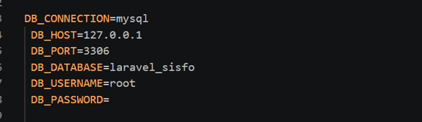
Gambar 3: Setting DB_CONNECTION=mysql, DB_HOST=127.0.0.1, DB_PORT=3306, DB_DATABASE=laravel_sisfo, DB_USERNAME=root, DB_PASSWORD kosong.
Package laravel/ui digunakan untuk membangkitkan authentication scaffolding. Perintah:
composer require laravel/ui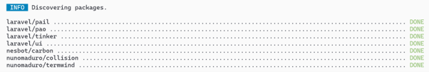
Gambar 4: Proses instalasi laravel/ui berhasil (ditandai DONE).
Menjalankan perintah berikut untuk membuat authentication dengan tampilan Bootstrap:
php artisan ui bootstrap --auth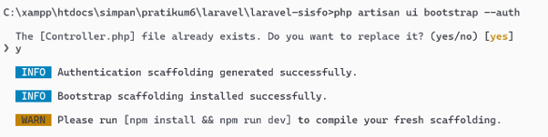
Gambar 5: Scaffolding authentication berhasil digenerate. Perintah ini juga membuat controller, view (login, register, forgot password, dashboard) dan route auth.
Untuk mengkompilasi asset CSS dan JS (termasuk Bootstrap), dijalankan perintah:
npm install && npm run dev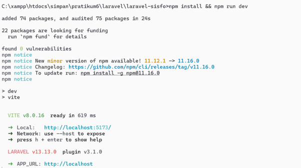
Gambar 6: Proses installasi package npm dan kompilasi Vite berhasil. Asset siap digunakan.
Migrasi default Laravel (tabel users, password_resets, failed_jobs, dll) dijalankan dengan:
php artisan migrate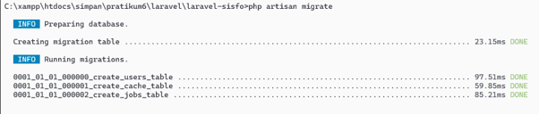
Gambar 7: Migrasi berhasil, tabel users dan lainnya terbuat di database.
Kebutuhan aplikasi memerlukan kolom tambahan: username, level, status. Dibuat migration baru:
php artisan make:migration costum_table_users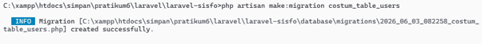
Gambar 8: Migration dengan nama 2026_06_03_082258_costum_table_users.php berhasil dibuat.
Isi migration (method up()) ditulis untuk menambah kolom ke tabel users:
Schema::table('users', function (Blueprint $table) {
$table->string("username")->unique();
$table->string("level");
$table->enum("status", ["ACTIVE", "INACTIVE"]);
});Kemudian menjalankan migrasi:
php artisan migrate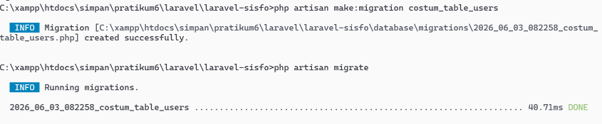
Gambar 9: Migrasi berhasil, kolom username, level, status ditambahkan ke tabel users.
Dibuat seeder AdminSeeder untuk mengisi akun admin awal. Perintah:
php artisan make:seeder AdminSeederKemudian diisi dengan kode:
$admin = new \App\Models\User;
$admin->name = "Admin Sisfo";
$admin->username = "admin";
$admin->email = "admin@sisfo.com";
$admin->level = json_encode(["ADMIN"]);
$admin->status = "ACTIVE";
$admin->password = \Hash::make("12345678");
$admin->save();Jalankan seeder:
php artisan db:seed --class=AdminSeeder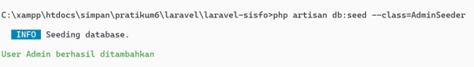
Gambar 10: User Admin berhasil ditambahkan.
Setelah seeder, tampilan dashboard awal (setelah login) masih menggunakan tampilan bawaan Laravel.
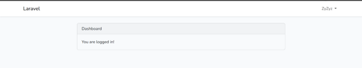
Gambar 11: Halaman dashboard default setelah login (tampilan masih polos).
Template SB Admin 2 (Start Bootstrap) diunduh dari link, diekstrak dan folder asset (css, js, vendor, img) diletakkan ke public/sbadmin.
File resources/views/layouts/app.blade.php (default untuk login) diubah menjadi template SB Admin 2 untuk halaman login. Hasilnya tampilan login menjadi lebih modern.
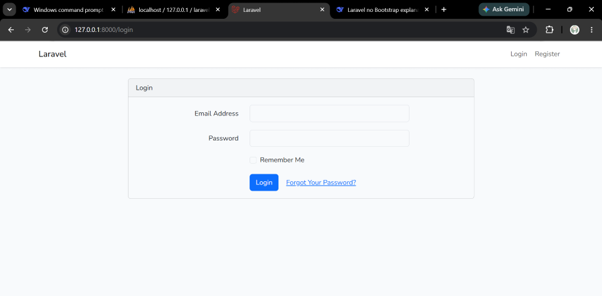
Gambar 12: Halaman login dengan template SB Admin 2 (perhatikan gambar dari PDF, namun setelah modifikasi tampilan login sesuai dengan asset sbadmin).
Dibuat file resources/views/layouts/main.blade.php yang berisi struktur global (sidebar, topbar, content). Menggunakan @include('layouts.sidebar') dan @include('layouts.topbar') serta @yield('judul') dan @yield('konten').
Sidebar dan topbar disesuaikan dengan menu yang ada (Dashboard, Users). Topbar menampilkan nama user yang login dan tombol logout.
Setelah layout diterapkan, halaman dashboard berubah menjadi lebih rapi.
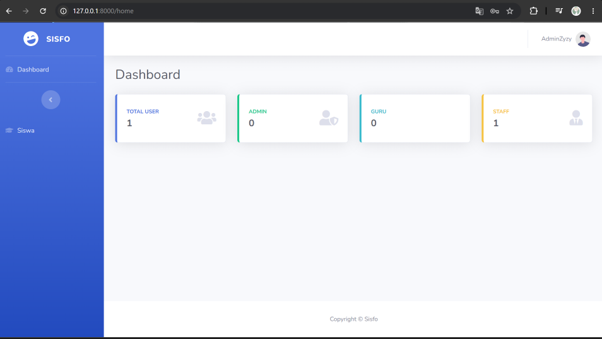
Gambar 13: Dashboard setelah menggunakan template SB Admin 2, menampilkan card statistic (Total User, Admin, Guru, Staff) dan copyright.
Dibuat controller resource UserController:
php artisan make:controller UserController --resourceRouting ditambahkan di routes/web.php:
use App\Http\Controllers\UserController;
Route::resource('users', UserController::class);View create.blade.php dibuat dengan form input nama, email, username, password, level (multiple select). Method store menyimpan data ke tabel users dengan level di-encode JSON. Setelah berhasil, redirect ke index dengan flash message.
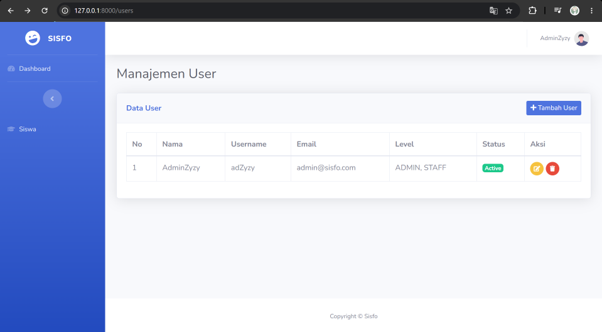
Gambar 14: Halaman daftar user setelah beberapa data ditambahkan (tampilan menggunakan DataTable sederhana).
Gambar 15: Alert "User berhasil ditambahkan" setelah menambah user baru.
Gambar 16: Tabel user menampilkan nama, username, email, level, status, aksi (edit, hapus).
Tombol edit mengarah ke route users/{id}/edit. Form edit sudah terisi data user, termasuk pilihan level. Method update menyimpan perubahan.
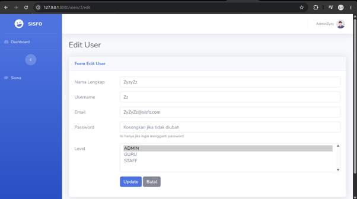
Gambar 17: Form edit user dengan data yang sudah ada (misal mengubah nama lengkap).
Tombol hapus menggunakan konfirmasi JavaScript (alert) dan method DELETE. Setelah dihapus, muncul pesan sukses.
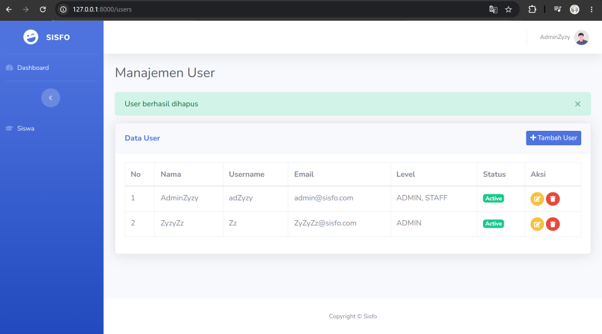
Gambar 18: Konfirmasi penghapusan user dan notifikasi "User berhasil dihapus".
| Kategori | Perintah |
|---|---|
| Membuat Project | composer create-project laravel/laravel laravel-sisfo --prefer-dist |
| Install Laravel UI | composer require laravel/ui |
| Auth Scaffolding | php artisan ui bootstrap --auth |
| Asset Compile | npm install && npm run dev |
| Migrasi | php artisan migrate |
| Buat Migration Custom | php artisan make:migration costum_table_users |
| Buat Seeder | php artisan make:seeder AdminSeeder |
| Jalankan Seeder | php artisan db:seed --class=AdminSeeder |
| Buat Controller Resource | php artisan make:controller UserController --resource |
| Clear Cache (opsional) | php artisan config:clear, php artisan cache:clear |
Praktikum ini berhasil menerapkan sistem authentication pada Laravel menggunakan package laravel/ui dengan tampilan Bootstrap. Customisasi tabel users (penambahan kolom username, level, status) dapat dilakukan melalui migration. Seluruh tampilan antarmuka diubah menggunakan template SB Admin 2 yang memberikan tampilan dashboard profesional. Fitur manajemen users (CRUD) lengkap dengan resource controller, validasi, dan session flash message telah berfungsi dengan baik. Dengan demikian, pemahaman tentang Laravel authentication, templating Blade, dan operasi CRUD pada database semakin mantap.
Laporan ini melampirkan bukti dokumentasi setiap langkah berupa screenshot terminal dan tampilan web.
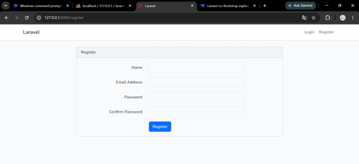
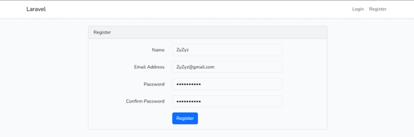
Catatan: Seluruh gambar disimpan dalam folder lprk9 sesuai permintaan.